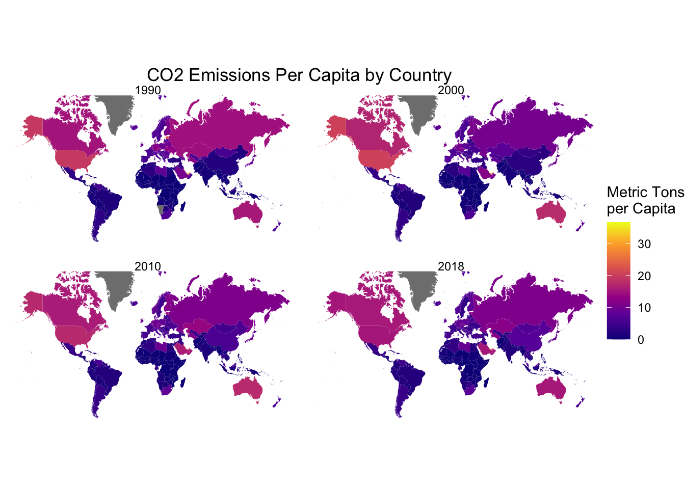
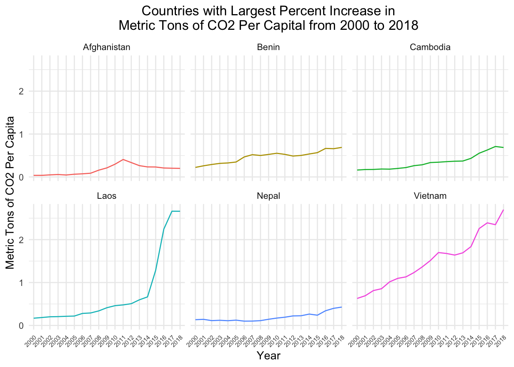
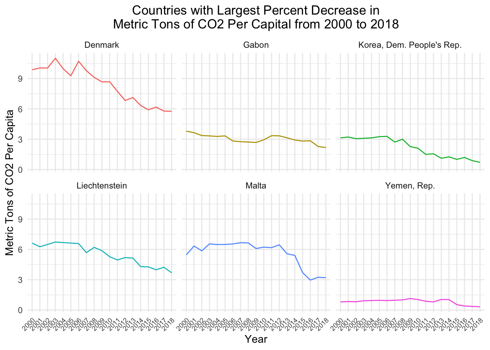

In my second blog post, I will be analyzing a data set of countries’ C02 emissions. I acquired this data from Kaggle which the user sourced from https://data.worldbank.org/ in 2018. The data set includes 266 observations (countries and regions), as well as each location’s metric tons of C02 emissions per capita for years between 1960-2018. This metric indicates a country’s carbon dioxide (CO2) emissions in relation to its population size. Meaning, it quantifies the amount of CO2 emissions produced by a country per person, which provides insight into the individual carbon footprints and overall environmental sustainability for a given region. I seek to visualize which countries in recent history have had the largest changes in CO2 emission per capita. It is important to note there are groups and regions which are used in this data set (e.g. Post-demographic dividend, Upper middle income, Europe & Central Asia, etc) which I exclude from some of my later analysis, because the data set does not outline which countries fall into these groups and regions.
Data Wrangling
library(tidyverse)
── Attaching core tidyverse packages ──────────────────────── tidyverse 2.0.0 ──
✔ dplyr 1.1.2 ✔ readr 2.1.4
✔ forcats 1.0.0 ✔ stringr 1.5.0
✔ ggplot2 3.4.3 ✔ tibble 3.2.1
✔ lubridate 1.9.2 ✔ tidyr 1.3.0
✔ purrr 1.0.2
── Conflicts ────────────────────────────────────────── tidyverse_conflicts() ──
✖ dplyr::filter() masks stats::filter()
✖ dplyr::lag() masks stats::lag()
ℹ Use the conflicted package (<http://conflicted.r-lib.org/>) to force all conflicts to become errors
library(maps)
Attaching package: 'maps'
The following object is masked from 'package:purrr':
map
Rows: 266 Columns: 60
── Column specification ────────────────────────────────────────────────────────
Delimiter: ","
chr (1): Country Name
dbl (59): 1960, 1961, 1962, 1963, 1964, 1965, 1966, 1967, 1968, 1969, 1970, ...
ℹ Use `spec()` to retrieve the full column specification for this data.
ℹ Specify the column types or set `show_col_types = FALSE` to quiet this message.
Warning in left_join(., world_df, by = c(country = "region")): Detected an unexpected many-to-many relationship between `x` and `y`.
ℹ Row 1 of `x` matches multiple rows in `y`.
ℹ Row 1 of `y` matches multiple rows in `x`.
ℹ If a many-to-many relationship is expected, set `relationship =
"many-to-many"` to silence this warning.
largest_inc <- emissions_longer %>%filter(year >=2000) %>%mutate(country =as.factor(country)) %>%filter(!str_detect(country, pattern ="(Africa Eastern and Southern)|(Africa Western and Central)| (Central Europe and the Baltics)|(Early-demographic dividend)|(Early-demographic dividend)| (East Asia & Pacific)|(East Asia & Pacific (excluding high income))|(East Asia & Pacific (IDA & IBRD countries))| (Euro area)|(Europe & Central Asia)|(Europe & Central Asia (excluding high income))|(Europe & Central Asia (IDA & IBRD countries))| (European Union)|(Fragile and conflict affected situations)|(Heavily indebted poor countries (HIPC))|(High income)| (IBRD only)|(IDA blend)|(IDA only)|(IDA total)|(Late-demographic dividend)|(Latin America & Caribbean)| (Latin America & Caribbean (excluding high income))|(Latin America & the Caribbean (IDA & IBRD countries))| (Least developed countries: UN classification)|(Low & middle income)|(Low income)|(Lower middle income)| (Middle East & North Africa)|(Middle East & North Africa (excluding high income))|(Middle East & North Africa (IDA & IBRD countries))| (Middle income)|(Not classified)|(OECD members)|(Other small states)|(Post-demographic dividend)|(Pre-demographic dividend)| (South Asia)|(South Asia (IDA & IBRD))|(Sub-Saharan Africa)|(Sub-Saharan Africa (excluding high income))| (Sub-Saharan Africa (IDA & IBRD countries))|(Upper middle income)")) %>%arrange(desc(recent_percent_increase)) %>%distinct(country, .keep_all =F) %>%slice_head(n =6) %>%pull()largest_dec <- emissions_longer %>%filter(year >=2000) %>%mutate(country =as.factor(country)) %>%filter(!str_detect(country, pattern ="(Africa Eastern and Southern)|(Africa Western and Central)| (Central Europe and the Baltics)|(Early-demographic dividend)|(Early-demographic dividend)| (East Asia & Pacific)|(East Asia & Pacific (excluding high income))|(East Asia & Pacific (IDA & IBRD countries))| (Euro area)|(Europe & Central Asia)|(Europe & Central Asia (excluding high income))|(Europe & Central Asia (IDA & IBRD countries))| (European Union)|(Fragile and conflict affected situations)|(Heavily indebted poor countries (HIPC))|(High income)| (IBRD only)|(IDA blend)|(IDA only)|(IDA total)|(Late-demographic dividend)|(Latin America & Caribbean)| (Latin America & Caribbean (excluding high income))|(Latin America & the Caribbean (IDA & IBRD countries))| (Least developed countries: UN classification)|(Low & middle income)|(Low income)|(Lower middle income)| (Middle East & North Africa)|(Middle East & North Africa (excluding high income))|(Middle East & North Africa (IDA & IBRD countries))| (Middle income)|(Not classified)|(OECD members)|(Other small states)|(Post-demographic dividend)|(Pre-demographic dividend)| (South Asia)|(South Asia (IDA & IBRD))|(Sub-Saharan Africa)|(Sub-Saharan Africa (excluding high income))| (Sub-Saharan Africa (IDA & IBRD countries))|(Upper middle income)")) %>%arrange(recent_percent_increase) %>%distinct(country, .keep_all =F) %>%slice_head(n =6) %>%pull()
Primary Visualizations
emission_lat_long %>%filter(year =="1990"| year =="2000"| year =="2010"| year =="2018") %>%ggplot(aes(x = long, y = lat,group = group)) +geom_polygon(aes(fill = metric_tons_pcapita)) +coord_map(projection ="mercator", xlim=c(-180,180)) +facet_wrap(~ year) +theme_void() +scale_fill_viridis_c(option ="plasma") +labs(title ="CO2 Emissions Per Capita by Country",fill ="Metric Tons\nper Capita") +theme(plot.title =element_text(hjust =0.5))

This first plot ues a Mercator projection to view the metric tons of CO2 emitted by various countries in the years 1990, 2000, 2010, and 2018 on a map. I chose to view these years, because starting around 1990 the evidence and risks of human-caused warming first became widely known. It can be seen from the map, countries like Estonia, the UAE, and Luxembourg have higher metric tons of emissions per capita. This makes sense, because these countries are either relatively smaller in population or known for their oil production. When looking at some of the larger land-mass countries, it can be seen the USA and Russia seem to have decreased their emissions per capita over these years. On the contrary, countries like China, Saudi Arabai, and Kazakhstan have increased over the same period.
emissions_longer %>%filter(year >=2000) %>%filter(country %in% largest_inc #| country %in% largest_dec ) %>%ggplot(aes(x = year,y = metric_tons_pcapita,group = country,color = country)) +geom_line() +facet_wrap(~country) +theme_minimal() +theme(legend.position ="none",axis.text.x =element_text(angle =45, hjust =1, size =6),plot.title =element_text(hjust =0.5)) +labs(title="Countries with Largest Percent Increase in\nMetric Tons of CO2 Per Capital from 2000 to 2018",y ="Metric Tons of CO2 Per Capita",x ="Year",color ="Country")

While the Map above gives an interesting global view of emission changes throughout the years, it is more difficult to see the changes in emissions from smaller countries. I compare some of the emissions of countries with top percent increases in metric tons of CO2 per capita from the year 2000 to 2018. From this plot it can be seen Laos increased their CO2 emissions per capita drastically by nearly 2.5 metric tons over the the 18 year period which translated to a 14.74% increase. Vietnam also had a large emission increases over this period of just under 2.5 metric tons.
emissions_longer %>%filter(year >=2000) %>%filter(country %in% largest_dec) %>%ggplot(aes(x = year,y = metric_tons_pcapita,group = country,color = country)) +geom_line() +facet_wrap(~country) +theme_minimal() +theme(legend.position ="none",axis.text.x =element_text(angle =45, hjust =1, size =7),plot.title =element_text(hjust =0.5)) +labs(title="Countries with Largest Percent Decrease in\nMetric Tons of CO2 Per Capital from 2000 to 2018",y ="Metric Tons of CO2 Per Capita",x ="Year",color ="Country")

In this plot, I compare some of the emissions of countries with top percent decreases in metric tons of CO2 per capita from the year 2000 to 2018. From this plot it can be seen Denmark decreased their CO2 emissions per capita drastically over the the 18 year period by over 3 metric tons, translating to a 41.64% decrease. Korea had the largest percent decrease in emissions at 77.36% from a roughly 2 metric ton decrease in C02 emission per capita.
Conclusion and Wrap-Up
Next time, for my faceted plots, I would like to add a second ‘y’ axis on the right hand side which would plot the percent change in emissions per capita. This would allow the reader to see both the change in raw metrics tons in addition to the percent change. In the future, I would like to also join together population data to compare how dependent these per capita metrics are based on each countries’ population. I would also love to acquire the lists of countries which belong to the groups and regions I excluded from my analysis to identify geographical trends in global emissions.
Connections to Class Ideas
In my first map plot, I implemented a Mercator projection of the globe and colored each country by its metric tons of CO2 emissions per capita. This map served as an effective visualization, because it allowed me to observe the fact that countries with smaller land-mass (and most likely population) often had higher CO2 emissions per capita. Without this, my hypothesis about population would potentially have overlooked. My next plots utilized line graphs and facet wrapping of the top percentage changes in CO2 emissions per capita. Doing this allowed me to present this 18 year time series data in a fashion where is was uncluttered and easy to interpret.